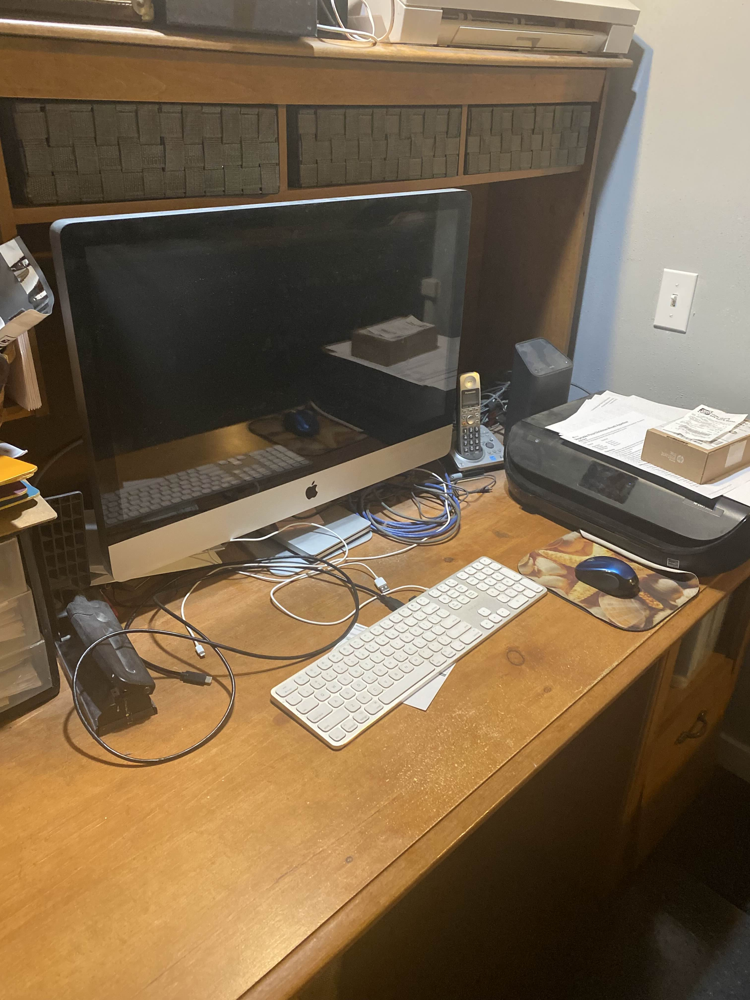
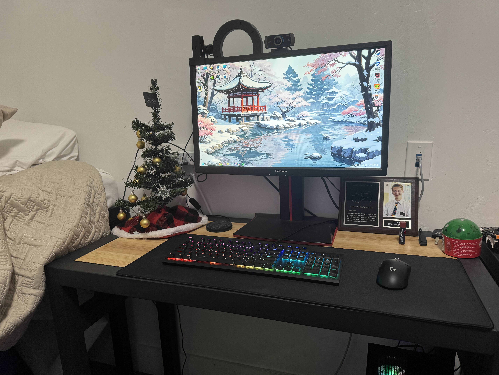

My Old Setup
Here's a look at my old setup where I started my journey into video editing and content creation. It was basic but served as the foundation for my skills.
I used a 2013 Mac with free Photoshop software and iMovie. It had its limitations, but it taught me a lot about video editing and perseverance.
My New Setup
As my channel grew, so did my setup. Here's a look at my current setup, which allows me to produce high-quality content more efficiently.
With a new computer, advanced software, and better equipment, I've been able to enhance the quality of my videos and streamline my workflow.